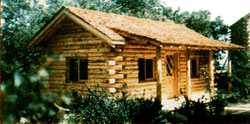
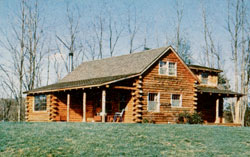
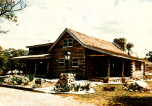
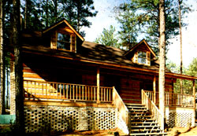
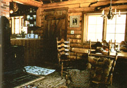
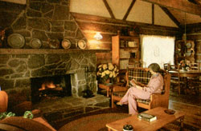
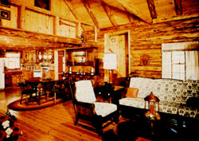

Attractive, energy-efficient, sturdy, and cost-effective:
When European settlers first came to the North American continent, their dwellings were, naturally, constructed of whatever materials were readily available ... in most cases, timber cut right from the forests and hand-hewn to the desired dimensions. Of course, most of these early log cabins were primitive affairs, but they provided excellent shelter With a minimum of upkeep ... and-as testimony to the durability of such home-made-structures there are log buildings-standing today that date back to before the American Revolution!
As the years went by, however, building styles-and materials-changed ... to the point where steel, concrete, and even glass are now used to construct dwellings that often don't resemble residences at all. However, the high price of goods and rising labor costs are rapidly turning these "modern" dream houses into nightmares ... and paving the way Or a new period of log home popularity.
To most folks, the idea of a log building conjures up visions of Daniel Boone and a drafty, ramshackle timber hut. In reality, though, twentieth-century technology has improved on that concept . . . and today's log dwellings not only are well- constructed, weather tight units, but also can be designed and furnished to rival the most palatial of conventional houses.
Furthermore, the contemporary log homes offer many advantages that more conventional structures (because of their design) simply cannot equal. For the most part, log buildings are sturdy, durable units that [a] require little, if any, attention after construction and final weatherproofing, [b] need a minimum of insulation-or none at all-to achieve sufficient thermal protection from the elements, and [c] can be built for a lower cost than can the "typical" home ... especially if the owner is willing to devote his or her share of time and labor to the project.
Understandably enough, even though there are excellent factory-made log home kits available, many farmsteaders (and even suburban homeowners) at tempt to build their own timber dwellings from the ground up. And, although their intentions are well-meant, such do-it-your-selfers sometimes run into three major obstacles right from the start:
[1] Even the homesteader who's fortunate enough to live on wooded acreage doesn't often have enough raw material to complete a fairsized dwelling. It takes at least 10 dozen logs (some over 30 feet in length) just to build a large cabin ... and the straight, disease-free specimens required for structural soundness just aren't available on the typical small woodlot On top of this, some tree species simply cannot be used in log home construction. The most acceptable varieties are cedar, Douglas fir, yellow pine, poplar, or spruce. And-if these particular woods aren't native to an area-the prospective builder will have to have quality timbers shipped in ... or settle for a less desirable (and often not as durable) species.
[2] A tree is a living organism, and as such is swollen with its own "lifeblood" ... the sap and other fluids that fill the wood's inner fibers. In order to insure that the timbers within a structure won't shrink with the passage of time (and subsequently throw the finished home "off level"), the logs must be stripped of their bark and cambium layers (to expose the sapwood beneath) and allowed to cure-or dry out-for several months prior to the actual construction of the dwelling. Unfortunately, few novice homebuilders have the time, facilities, or patience to carry out this whole "aging" process successfully.
[3] Even if they had plenty of cured logs available, some people lack the physical ability and/or the knowledge Jo prepare the timbers properly. Each log must, for example, be inspected for "checks" or cracks, and then-if one of the more common construction methods is to be used-planed flat on two opposing surfaces to insure a tight seal between the timbers. In addition (and this is especially difficult), the corner joints must be individually cut to provide a perfect fit.
So, in many cases-unless you're an "old pro" at building log houses-it's best to leave the lumber preparation to the experts. After all, some log home firms have been in business for several decades, and during that time numerous technological advances have been made in all aspects of the "timber home" field.
In addition, such companies are equipped to select and prepare construction-grade logs, already have the facilities for curing green timber, and will go to great lengths to accommodate their customers ... especially if there are any technical problems encountered during the actual building process. In fact, some manufacturers even go so far as to assemble the structures at their own location prior to shipping (to be sure all the components fit properly) then dismantle them and send the package on its way! Although such preassembly is the exception rather than the rule, most log home dealers truly do want their customers to be satisfied ... and will provide varying degrees of assistance-from an actual hands-on work crew to an easy-to-follow owner/builder's guide-that make the buyer's life easier.
The sheer sturdiness of a log home when compared to the typical flimsy, stud-framed house-is enough to boggle the mind. Whereas a conventional structure needs all four exterior walls plus some load-bearing interior partitions to support it, a log dwelling should be able to stand by itself-if need be-with one entire side removed!
This "Rock of Gibraltar" ruggedness is primarily due to the fact that-in most cases-each log in every exterior wall is a solid, one-piece section of timber, connected to its mates with a sturdy joint at the corners of the house. The method of uniting these logs at the perpendicular varies among manufacturers, of course, but generally the Individual logs are "locked" together in some fashion ... using either notches, "bolts" (these are actually long sections of threaded rod fastened into a concrete slab foundation), or standard dovetail or mortise and-tenon wood joints.
By taking advantage of such solid connections, manufacturers can almost guarantee that the house is nearly as strong as the timbers themselves ... and reports from around the country including a U.S. government regional earthquake damage study-indicate that log structures are capable of withstanding an amazing amount of stress with only superficial damage.
Few would deny the fact that a log home offers unparalleled natural beauty and charm ... but even fewer folks realize some of the other practical advantages that are inherent in these rustic-looking dwellings.
For one thing, the timbers themselves are efficient insulators. Although some manufacturers offer an optional "insulation package" with their houses, the fact is that-in a well- constructed log home (free from drafts, leaks, or cracks)-additional in-the-wall material is often not needed. Eight inches (or more!) of wood provide a heck of a lot of thermal protection, and the money saved can be put to better use elsewhere in the house. (Of course, when rounded logs are used, the horizontal joints between the wooden members must be especially shielded. This is usually accomplished by putting several layers of masonite and foam or felt into the seams.)
As a further "plus" factor, log dwellings can't be beat for durability . . . and their long-lasting qualities aren't limited to exterior surfaces. The inside of a house is also subject to the "hard knocks" of life (especially if the resident family has children), and the ruggedness of a "pioneer" home is often a most welcome,feature.
By and large, factory kits are a practical shortcut for folks who want a log residence. But don't let the manufacturer's list prices fool you ... even though such packages can he purchased for between $6,000 and $20,000, the kit prices will by no means reflect the completed cost of the house. If fact, the Companies themselves will be We first to admit Mat the finished log building can run from two to four times the amount of money needed to purchase the basic kit. This of course. is due to the fact that ''prefabricated '', prices don't include assembly expenses of, the installation of plumbing, heating, electrical wiring, septic systems, and so forth. However, most of these jobs-especially the actual construction-can at least partially involve the owner/builder. In fact that's the beauty of the whole kit concept: If the buyer is willing to donate his or her own time and effort, he or she can reduce the total cost of the log home by 40% or more!
Better yet, many manufacturers actually encourage owner participation ... by offering detailed instructions (corresponding to numbered logs) with the kit, in addition to an open door" policy regarding potential questions. (Of course, for those who don't feel up to building their own homes, most companies can supply a crew-or refer you to one in your own locale-That will do the job correctly.) Either way, the packages are designed so that most houses can be closed in-less than two weeks!
The prospective buyer should know, too, that each log home manufacturer sells a different "parcel". Some firms supply roofs and floor joists, others do not. Many offer options on these items . . . as well as a variety of structural and design features which can change the appearance of the original kits considerably. So it would be worth your while to look-and ask questions-before you buy . . . you just might save yourself it great deal of trouble later.
Financing and insurability are, two other factors that should be considered when shopping for it log home. Fortunately, because of stringent codes within the industry-and the ''success" of many log homes that has already been built-most financial institutions recognize the fact that Under structures are "good risks'' ... as do insurance companies across the continent.
A contemporary log house kit might just he the happy medium-between buying it conventional home and constructing it dwelling from scratch-that many folks are looking for. In any event, it would be hard to find a type of residence that's more attractive than at ,.modern" timber structure . . . and there's no doubt that these substantial buildings provide far more quality-at comparable costs-than the typical sub urban ''crackerboxes'' that are all too common today.
The following is a list of log home manufacturers active in the United States today. Although this directory is not all-inclusive, it represents a fair cross section of the industry. We've also included access information to the Log Home Guide, an annual Canadian publication which should help the prospective buyer make an educated decision regarding the purchase of a log home. (Please address Dept. TMEN when you write to any of these firms ... so they'll know your MOTHER sent you.)
The following is a IT of log home manufacturers active in the United States today. Although t his directory is not all-inclusive, it represents a fair cross section of the industry. We've also included access Information to the Log Home Guide, an annual Canadian publication which should help the prospective buyer make an educated decision regarding the purchase of a log home (Please address Dept. TMEN when you write to any of these firms ... so they'l know your MOTHER sent you.)
AIR-LOCK LOG COMPANY
Bow 506
Las Vegas, New Mexico 87701
No 425-8888
NORTHEASTERN LOG HOMES, INC.
P.O. Box 46
Kenduskeag, Maine 04450
(207) 884-7000
ALTA INDUSTRIES LTD.
P.O. Box 88
New York
(914) 586-3336
NORTHEASTERN LOG HOMES, INC.
P.O. Box 126
Groton, Vermont 05046
(802) 584-3200
ANDREW, INC.
28 Depot Street
South Windham, Maine 04082
(207) 892-8561
NORTHEASTERN LOG HOMES, INC.
P.O. Box 7966
Louisville Kentucky 0207
(502) 897-7624
ARKANSAS LOG HOMES, INC.
(Real Log Homes)
P.O. Box 959
Mena, Arkansas 71953
NORTHERN PRODUCTS, INC.
Bormac Road
Bangor, Maine 04401
(502) 897-7624
AUTHENTIC HOMES CORPORATION
Box Q88
Laramie, Wyoming 82070
(307) 742-3786
PAN ADOBE CEDAR HOMES
4350 Lake Washington Boulevard, North
Renton, Washington 98055
(206) 2551260
BEAVER LOG HOMES
P.O. Box 1966
Grand Island, Nebraska 68801
(308) 381-0421
PIONEER LOG HOMES
P.C. Box 267
Newport New Hampshire 03773
(603) 863-1050
BELLAIRE LOG HOMES
Box 322
Bellaire, Michigan 496158
(616) 533-8633
PROCTOR PIPER LOG HOMES, INC.
Peaceful Valley Road
Proctors ville, Vermont 05153
(802) 226-7224
BOYNE FALLS LOG HOMES, INC.
Boyne Falls, Michigan 49713
(616) 549-2421
R & L LOG BUILDING, INC.
RD 1
Guilford, New York 13780
(607) 764-8118
CAROLINA LOG BUILDINGS, INC.
(Real Log Homes)
P.O. Box 368
Fletcher, North Carolina 28732
REAL LOG HOMES, INC. (Real Log Homes)
P.O. Box 8509
Missoula, Montana 59807
(607) 721-1600
CEDAR HOMES, INC.
555-116 Avenue, Northeast
Bellevue, Washington 98004
(206) 454-3966
RUSTIC OF LINDBERGH LAKE
Seeley Lake Montana 59868
(406) 754-2222
EUREKA LOG HOMES, INC.
Commercial Avenue
Industrial Park
Berryville, Arkansas 72616
(501) 423-3396
SIERRA LOG HOMES, INC. (Real Log Homes)
P.C. Boy N83
Carson City, Nevada 89701
(702) 883-0590
GREEN MOUNTAIN CABINS, INC.
Box 190
Chester, Vermont 05143
(802) 875-2163
SMOKEY MOUNTAIN LOG CABINS
13 Rankin Avenue
Asheville, North Carolina 28802
(704) 253-0771
GREEN RIVER TRADING COMPANY
Boston Corners Road
Millerton, New York 12546
(518) 789-3311
SUPERIOR LOG HOMES
5249 Corey Road
Williamston, Michigan 48895
(517) 468-3344
HERITAGE LOG HOMES, INC.
P.O. Box 610
Gatlinburg, Tennessee 37738
(615) 436-9331
TIMBER LOG HOMES. INC.
Austin Drive
Marlborough, Connecticut 06447
(203) 295-9529
JUSTUS COMPANY, INC.
Box 98300
Tacoma, Washington 98499
(206) 582-3404
TRADITIONAL LOG HOMES, INC.
(Real Log Homes)
P.O. Box 50
State Road North Carolina 28676
(919) 366-2596
LINCOLN LOGS LTD.
Met Street
Box 05
Chestertown, New York 12817
(518) 496-2427
VERMONT LOG BUILDINGS, INC.
(Real Log Homes)
P.O. Box 202
Hartland, Vermont 05048
(802) 436-2127
LODGE LOGS BY MacGREGOR
3200 Gowen Road
Boise Woo 83705
(208) 336-2450
WARD CABIN COMPANY
Box 72
Houlton, Maine 04730
07) 53ZM31
LOGCRAFTERS INCORPORATED
101 Aster Avenue
Chattanooga, Tennessee 37419
(615) 821-5782
WESTERN VALLEY LOG HOMES
Box 254
Victor, Montana 59875
(406) 961-4421
LOK-N-LOGS, INC.
Route 80
RD2, Box 212
Sherburne, New York 13460
(607) 674-9722
WILDERNESS LOG HOMES
Route 2
Plymouth, Wisconsin 53073
(414) 892-7896
LUMBER ENTERPRISES, INC.
Model Log
Star Route, Box 203
Bozeman, Montana 59715
(406) 763-4411
THE LOG HOME GUIDE FOR BUILDERS
AND BUYERS
Muir Publishing Company Ltd.
Gardenvale, Quebec, Canada H9X I BO
(514) 457-2045
Subscription price; $7.50 postpaid anywhere
NEW ENGLAND LOG HOMES, INC.
P.O. Box 5056
Hamden, Connecticut 06518
(203) 562-9981
|
 |
 |
 |
|
 |
 |
 |
|
 |
|
|